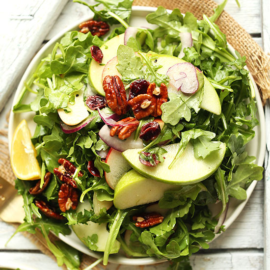

Homepage
Apple Pecan Salad

Descriptiom
This apple pecan salad with a simple homemade vinaigrette has crunch, sweetness, and a salty kick.
Ingredients
Dressing
- 2tbsp white wine vinegar
- 2tsp Dijon mustard
- 1 shallot, minced
- 1/2 tsp of salt
- black pepper
- 1/3 cup olive oil
Salad
- 6cups mixed greens
- 1 apple, cubed
- 1/2 cup pecan halves, toasted
- 1/3 cup dried cranberries
- 2 slices crisp cooked bacon, chopped
- 1/3 cup crumbled feta cheese
Directions
- Combine vinegar, Dijon, shallots, salt, and pepper in a small bowl. Whisk in olive oil until dressing starts to emulsify.
- Combine mixed greens, apple, pecans, cranberries, and bacon in a large bowl and toss. Drizzle as much dressing over the salad as you like, and toss again. Sprinkle with feta, and serve.